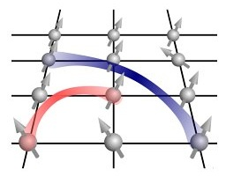

I am a postdoctoral researcher working at the interface of quantum optics, quantum information, and quantum many-body physics. My research focuses on light-matter interactions, strongly interacting atomic systems, and quantum simulation with Rydberg atoms.
My research interests include quantum optics, nanophotonics, cavity quantum electrodynamics, cold atoms, Rydberg atom arrays, and quantum many-body physics.
Strongly interacting Rydberg atoms and their applications to quantum simulation and quantum many-body physics.
Light-matter interactions, photon manipulation, and quantum optical phenomena in atomic systems.
Quantum dynamics, strongly correlated systems, Hilbert-space fragmentation, and nonequilibrium quantum phenomena.
Quantum electrodynamics and engineered light-matter interactions in nanoscale systems.